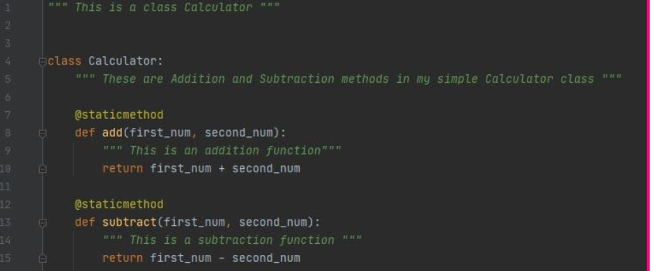
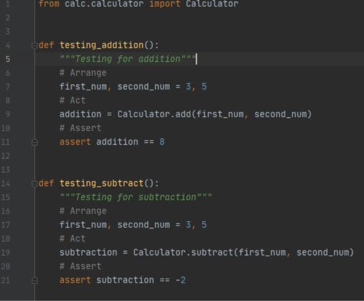
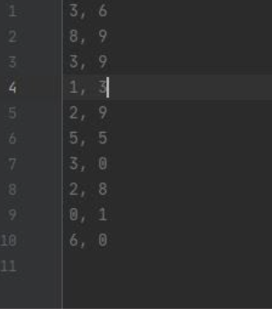
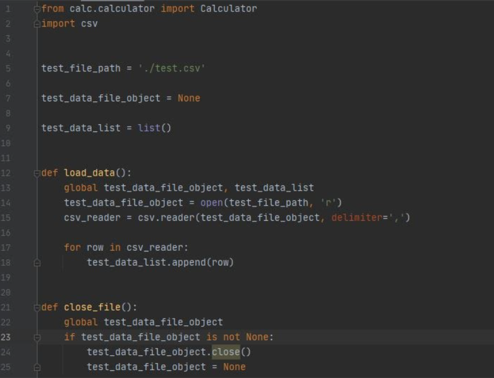

What is AAA testing?
AAA testing is just an acronym that stands for Arrange, Act and Assert.
In this tutorial we will be demonstrating how to use AAA testing on a simple calculator code.
-
Arrange
Arrange, inputs and targets. Arrange should set up the test case. It should answer the question, does the test require any objects or special settings? What should come first? What does my test do? Arranging is basically just giving your unit test a structure.
-
Act
Act on the target behavior. Act - should cover the main thing to be tested. This calls a function or method and keeps actions focused on the target behavior. Act is telling your unit test what you are going to be doing, what test should be carried out.
-
Assert
Then Assert expected outcomes. Assert - verifies the goodness or badness of the result. Sometimes, assertions are as simple as checking numeric or string values. Assertions will ultimately determine if the test passes or fails.
Let's take for example a simple calculator class that adds and subtracts
Image 1.1. This is my calculator class
In this tutorial calculator code is in my main.py file and the test file is in a different file. For testing to work in a different file, the calculator class from main.py must be imported into the test file(calc_test.py). This is one of the many reasons why OOP is very powerful.
Image 1.2 The Test File
In the Image 1.2 above, I have imported the calculator class to my current file.
Note:
For AAA testing in python the keyword Assert is used to call result instead of return or print.
Why is testing important?
- 1.Testing helps improve code quality significantly because all the small defects would have been identified and fixed before integration testing is done.
- 2.Testing simplifies the debugging process. If a test fails then only the latest changes made to the code will need to be debugged.
- 3.Testing also helps some developers, especially new developers understand code better.
- 4. Testing makes finding bugs easy and prevents wasting time to debug large volumes of code.
- 5. Testing overall helps in the long run against detecting depreciated codes or libraries of codes that a software depends on.
For more information click
how to use external data for testing
Unit tests that have access to the file system are generally not a very good idea. This is because the test should be self-contained, easily manipulated without having to go into the test code itself, by making your test data external to the test it's no longer immediately obvious what test the external file belongs to. Let’s continue to use our class Calculator and pass some tests through it using a CSV file. First, you need to create a CSV file that contains your test cases, in this case our test cases are numbers and the CSV will look like this. 
Image1.3 CSV File
You cannot pass your data into your test like this, so we have to separate them with commas and ensure the data is prepared to be used in the test cases. To make this easier, let’s move the data directly from our test.py file by importing the csv module to help us manage the CSV file.
Image1.4
Breakdown of image1.4
- Line 1: Imports the calculator class from the calculator file in the calc folder
- Line 2: Imports the CSV module to help us manage the CSV file
- Line 5: This is the absolute file path of my CSV file, why i have a full stop before a forward slash is to tell python that the file is in the same folder as where
I have my test file.py.
- Line 7: This declares the object of my data, in this case my data are just regular numbers and do not need to be converted into an object.
- Line 9: Here, I am converting my data into a list, so i can iterate over them easily.
- Lines 12-18: Is loading the csv files
- Line 21 -25 : Is closing the csv file after loading.
Image 1.5
- Lines 28- 37 is testing code using AAA testing with the imported csv file.
Image 1.6
Image 1.6 shows the result of the testing.